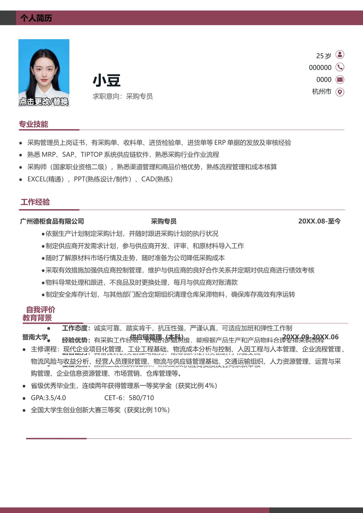

个人简历
小豆
求职意向：采购专员
广州德柜食品有限公司 采购专员 20XX.08-至今
•
依据生产计划制定采购计划，并随时跟进采购计划的执行状况
•
制定供应商开发需求计划，参与供应商开发、评审、和原材料导入工作
•
随时了解原材料市场行情及走势，随时准备为公司降低采购成本
•
采取有效措施加强供应商控制管理，维护与供应商的良好合作关系并定期对供应商进行绩效考核
•
物料导常处理和跟进，不良品及时更换处理，每月与供应商对账清款
•
制定安全库存计划，与其他部门配合定期组织清理仓库呆滞物料，确保库存高效有序运转
工作经验
教育背景
25 岁
000000
0000
杭州市
•
工作态度：
诚实可靠、踏实肯干，抗压性强，严谨认真，可适应加班和弹性工作制
•
经验优势：
有采购工作经验，较强的逻辑思维，能根据产品生产和产品物料合理安排采购流程
•
语言能力：
具备良好的英语读写能力，能够流利使用英语进行书面交流
•
资质亮点：
国家二级采购师职称，熟悉地采供应商资质及合同条款审核
自我评价
暨南大学 供应链管理（本科） 20XX.09-20XX.06
•
主修课程：现代企业项目化管理、工业工程基础、物流成本分析与控制、人因工程与人本管理、企业流程管理、
物流风险与收益分析、经营人员理财管理、物流与供应链管理基础、交通运输组织、人力资源管理、运营与采
购管理、企业信息资源管理、市场营销、仓库管理等。
•
省级优秀毕业生，连续两年获得管理系一等奖学金（获奖比例4%）
•
GPA:3.5/4.0 CET-6：580/710
•
全国大学生创业创新大赛三等奖（获奖比例10%）
专业技能
•
采购管理员上岗证书，有采购单、收料单、进货检验单、进货单等ERP 单据的发放及审核经验
•
熟悉MRP、SAP、TIPTOP 系统供应链软件，熟悉采购行业作业流程
•
采购师（国家职业资格二级），熟悉渠道管理和商品价格优势，熟练流程管理和成本核算
•
EXCEL(精通），PPT(熟练设计/制作）、CAD(熟练）